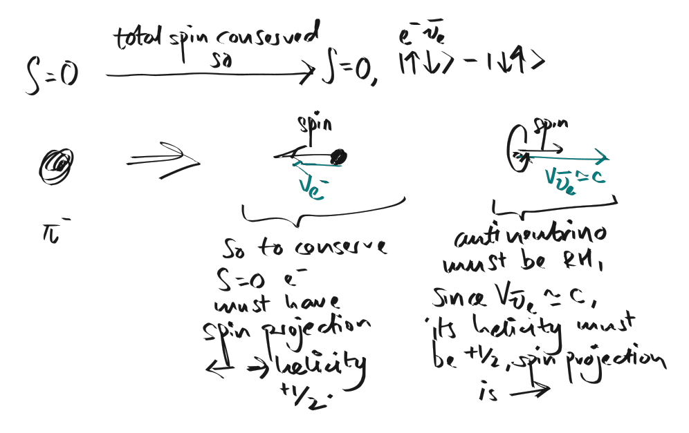

B4 Bookwork
A list of bookwork derivations for B4 nuclear and particle Physics.
Contents
Natural units
The idea of natural units is to replace the standard SI units $1 \text{ kg}, 1 \text{ m}, 1 \text{ s}$ with $\hbar, c, \text{GeV}$. For example, to convert $1 \text{ m}$ to natural units, note that dimensionally $[\text{m}] = \frac{[\hbar] [c]}{[\text{GeV}]}$. So we want to find $X$ such that: $$1 \text{ m} = X \, \frac{\hbar c}{\text{GeV}}$$ where the entire equation is in SI units. Obviously, $X = \frac{10^9 \times 1.6 \times 10^{-19}}{1.055 \times 10^{-34} \times 3 \times 10^8} = 5.06 \times 10^{15}$. The special feature with natural units is that after doing the above we set $\hbar = c = 1$, so we end up with: $$1 \text{ m} = 5.06 \times 10^{15} \text{ GeV}^{-1}$$ There always exists an unique combination of $\hbar$ and $c$ that will restore the right units to the equation (in SI), so we can do all the calculations in units of energy, and restore the missing $\hbar$s and $c$s in one go at the very end. The reason this works is because we have three independent units in each basis (SI and natural).
Let's work out the conversion of a general SI unit to natural units. That is, find the number $X$ and the power $\gamma$ in the following equation: $$\text{kg}^a \text{m}^b \text{s}^c = X \text{ GeV}^\gamma$$ To start, we write the equation in SI: $$\text{kg}^a \text{m}^b \text{s}^c = X \, \hbar^\alpha c^\beta \text{ GeV}^\gamma$$ For units in SI to match, we must have $\alpha + \gamma = a$, $2\alpha + \beta + 2\gamma = b$, $-\alpha -\beta - 2\gamma = c$. Solving this system of equations gives $\alpha = b+c$, $\beta = -2a+b$, $\gamma = a-b-c$. So: $$\text{kg}^a \text{m}^b \text{s}^c = X \, \hbar^{b+c} c^{-2a+b} \text{ GeV}^{a-b-c}$$ Now $X$ needs to cancel all the random numbers from $\hbar$, $c$ and $\text{GeV}$ on the right hand side, so: $$X = (1.055\times10^{-34})^{-b-c} \times (3\times10^8)^{2a-b} \times (10^9 \times 1.6 \times 10^{-19})^{-a+b+c}$$ Finally, set $\hbar = c = 1$, this gives the full conversion:
$$\text{kg}^a \text{m}^b \text{s}^c \rightarrow (1.055\times10^{-34})^{-b-c} \times (3\times10^8)^{2a-b} \times (10^9 \times 1.6 \times 10^{-19})^{-a+b+c} \text{ GeV}^{a-b-c}$$
So for example: $$a=1, \, b=c=0: \text{kg} \rightarrow 5.63 \times 10^{26} \text{ GeV}$$ $$a=b=0, \, c=1: \text{s} \rightarrow 1.52 \times 10^{24} \text{ GeV}$$ There is one more unit, charge. In natural units charge has no units, and it is related to SI units by the fine structure constant. Because the fine structure constant is dimensionless it has the same value in both systems, so: $$\alpha = \frac{e_\text{SI}^2}{4\pi \epsilon_0 \hbar c} = \frac{e_{\text{nat}}^2}{4\pi} \implies e_\text{nat} = \sqrt{4\pi \alpha} = 0.3022$$ And Coulombs law becomes: $$F = \frac{q_{1,\text{nat}} \, q_{2, \text{nat}}}{4\pi r^2}$$
pp chain
$${}^1_1p + {}^1_1p \rightarrow {}^2_1d + e^+ + \nu_e \phantom{xxx} \text{(1. tunneling past Coulomb barrier, Q=0.42 MeV)}$$ $${}^2_1d + {}^1_1p \rightarrow {}^3_2\text{He} + \gamma \phantom{xxx} \text{(2. proton capture, Q=5.49 MeV)}$$ $${}^3_2\text{He} + {}^3_2\text{He} \rightarrow {}^4_2\text{He} + 2 {}^1_1p \phantom{xxx} \text{(3. He formation via pp-I, Q=12.86 Mev)}$$ For a single ${}^4_2\text{He}$ to be formed we require two of step 1, two of step 2 and one of step 3. Therefore the total energy released from a single ${}^4_2\text{He}$ formation is $2 \times (0.42 + 5.49) + 12.86 = 24.68 \text{ MeV}$. The overall reaction is: $$4 {}^1_1p \rightarrow {}^4_2\text{He} + 2e^+ + 2\nu_e + 2\gamma$$ The rate of the reaction is limited by step 1, mainly because it proceeds via the weak interaction. The Coulomb barrier between the two protons also slows down the reaction. Note that even though the deuterium is made up of a proton and a neutron, and the latter has a higher rest mass than a proton, the binding energy between them makes the overall reaction release energy. Steps 2 and 3 proceed via the strong interaction.
Breit Wigner distribution
A detailed derivation of the Breit Wigner distribution and exponential decay law is given in this blog. Here I just want to bring up a few points and a quick exam derivation of the distribution.
Handwavy derivation
Start with the ansatz:
$$\psi_R(t) = e^{-\frac{iE_R t}{\hbar}} e^{-\frac{\Gamma t}{2\hbar}}$$
where $E_R$ is the resonance energy and $\Gamma$ is the decay width given by Fermi's golden rule.
Taking the Fourier transform of $\psi_R(t)$ gives:
$$\tilde{\psi}_R(E) = \mathcal{F}(\psi_R(t))[E] \propto \frac{1}{\tfrac{E-E_R}{\hbar} + \frac{i\Gamma}{2\hbar}}$$
And the energy distribution (probability density) is:
$$|\tilde{\psi}_R(E)|^2 \propto \sigma(E) \propto \frac{1}{(E-E_R)^2 + \Gamma^2/4}$$
In a general decay there will be a reaction feeding into the resonance, and the resonance feeds into a number of decay channels indexed by $f$. Including the additional spin factors, the rate of the reaction $\text{input } i = a+b \rightarrow \text{resonance} \rightarrow \text{decay product } f$ is:
$$\Gamma_{i\rightarrow R \rightarrow f} = \frac{2J+1}{(2s_a+1)(2s_b+1)} \cdot \frac{\Gamma_{i\rightarrow R}\Gamma_{R\rightarrow f}}{(E-E_R)^2 + \Gamma^2/4}$$
where:
$s_a, s_b$: spins of the two incoming input particles - Breit Wigner assumes that there are two incoming particles
$J$: spin of resonance $R$
$\Gamma_{i \rightarrow R}$: partial width of $R$ formation from inputs
$\Gamma_{R \rightarrow f}$: partial width of decay to $f$ from $R$
$\Gamma$: sum of all partial decay widths, $\sum_{f'} \Gamma_{R \rightarrow f'}$
A more rigorous justification using a toy model is given here.
Relativistic Breit Wigner
The relativistic Breit Wigner distribution is given by:
$$\sigma(E) \propto \frac{1}{(E^2 - E_R^2)^2 + E_R^2 \Gamma^2}$$
where $E_R$ is the resonance energy. When $E$ is close to $E_R$, the distribution reduces to the non-relativistic Breit Wigner distribution.
Born approximation and differential cross section
The wavefunction of a plane wave interacting with a nuclear potential (centered at the origin) is, in the first Born approximation: $$\psi(\vec{r}) = \psi_i(\vec{r}) + \psi_s(\vec{r}) = \frac{1}{\sqrt{V}}e^{i\vec{k}\cdot\vec{r}} - \frac{1}{\sqrt{V}}\frac{e^{i\vec{k}\cdot\vec{r}}}{r} \frac{m}{2\pi\hbar^2} \int_{\text{all space}} e^{i \vec{q}\cdot\vec{r}'} V(\vec{r}') \text{d}^3 \vec{r}'$$ If the potential is symmetric, then the equation simplifies to: $$\psi(\vec{r}) = \psi_i(\vec{r}) + \psi_s(\vec{r}) = \frac{1}{\sqrt{V}}e^{i\vec{k}\cdot\vec{r}} - \frac{1}{\sqrt{V}}\frac{e^{i\vec{k}\cdot\vec{r}}}{r}\frac{2m}{\hbar^2 q} \int_0^\infty r' V(r') \sin(qr') \text{d}r'$$
Interpretation 1.
Let $\psi(\vec{r})$ represent the wave function of a single particle. $\psi_i(\vec{r})$ and $\psi_s(\vec{r})$ are the wavefunctions corresponding to the incident and scattered parts of that particle. Even though $\psi_i(\vec{r}) = \frac{1}{\sqrt{V}}e^{i\vec{k}\cdot{\vec{r}}}$ is, as written, infinite in extent, in practice the incoming beam has a finite width and in the limit of large $r$ will subtend a relatively small solid angle. Therefore at large $r$ the scattering will be entirely due to $\psi_s(\vec{r})$, and any interference effects due to $\psi_i(\vec{r})$ may be ignored.
The probability that the particle scatters into a solid angle $\text{d}\Omega$ is then $\int_0^\infty |\psi_s(\vec{r})|^2 r^2 \text{d}\Omega \text{d}r$. In general we write $\psi_s(\vec{r}) = \frac{1}{\sqrt{V}}f(\theta, \phi) \frac{e^{i\vec{k}\cdot\vec{r}}}{r}$, so the probability can also be written as $\int_0^\infty \frac{1}{V}|f(\theta, \phi)|^2 \text{d}\Omega \text{d}r$ where: $$f(\theta, \phi) = \frac{2m}{\hbar^2 q} \int_0^\infty r' V(r') \sin(qr') \text{d}r'$$ We define $\text{d}P(\theta, \phi)$ as the probability that the particle scatters into the infinitesimal solid angle $\text{d}\Omega$ located in the direction of the vector $\vec{r}$, $(\theta, \phi)$. The differential "probability" (for scattering in the direction of $\vec{r}$) is then: $$\frac{\text{d}P}{\text{d}\Omega}(\theta, \phi) = \frac{1}{V} \int_0^\infty |f(\theta, \phi)|^2 \text{d}r$$ Note that $f(\theta, \phi)$ has units of $\text{m}$ and so $\frac{\text{d}P}{\text{d}\Omega}$ has units of $\text{str}^{-1}$. There is, however, something annoying with this interpretation, because as $V \rightarrow \infty$ it is not clear whether the integral blows up, $1/V$ kills the whole thing, or if the equation approaches some finite non zero limit!
Interpretation 2.
Now suppose that the wavefunction $\frac{1}{\sqrt{V}} e^{i\vec{k}\cdot\vec{r}}$ represents a stream of particles. The probability current associated with this wave is $j_\text{inc} = |\psi_i|^2 \cdot \frac{\hbar k}{m} = \frac{1}{V} \cdot \frac{\hbar k}{m}$. That is, if we were to put a bucket of cross sectional area $A$ in the way of this stream, the bucket will pick up $\frac{1}{V} \cdot \frac{\hbar k}{m} \cdot A$ particles per second.
Consider the probability current associated with scattering in the direction $(\theta, \phi)$. The same probability current formula tells us that this is $j_\text{sc} = |\psi_s|^2 \cdot \frac{\hbar k}{m} = \frac{1}{V} \frac{|f(\theta, \phi)|^2}{r^2}\cdot \frac{\hbar k}{m}$, and so the number of particles going into the solid angle $\text{d}\Omega$ is $j_\text{sc} r^2 \text{d}\Omega = \frac{\hbar k}{V} |f(\theta, \phi)|^2 \text{d}\Omega$.
Suppose we had a bucket in the path of the incoming wave that collected only particles scattered in the direction $(\theta, \phi)$. Then the cross sectional area of that bucket $\text{d}\sigma (\theta, \phi)$ should be defined such that: $$j_\text{inc} \underbrace{\text{d} \sigma (\theta, \phi)}_{\text{area}} = j_\text{sc} \underbrace{r^2 \text{d}\Omega}_{\text{area}} \implies \frac{1}{V}\frac{\hbar k}{m} \text{d}\sigma(\theta, \phi) = \frac{1}{V} \frac{\hbar k}{m} |f(\theta, \phi)|^2 \text{d}\Omega$$ This motivates the definition of a differential cross section: $$\frac{\text{d}\sigma}{\text{d}\Omega} (\theta, \phi) = |f(\theta, \phi)|^2$$ which has units $\text{m}^2 \, \text{str}^{-1}$. In this case, the differential cross section is well behaved. This reinforces the point that whenever we work with plane wavefunctions, we have to interpret them in terms of a continuous current of particles instead of the wavefunction of a single particle for the results to make sense.
$\alpha$ decay
The potential experienced by an alpha particle may be modelled as a deep well from $0$ to $r_a$, and a Coulombic potential from $r_a$ to $\infty$. The excess energy of the alpha particle above the energy at $\infty$ is $Q$. Therefore, the region $r_a$ to $r_b$ (Coulomb barrier) is classically forbidden by energy conservation. $r_b$ is given by: $$Q = \frac{e^2}{4\pi \epsilon_0} \frac{2(Z-2)}{r_b} \implies r_b = \frac{e^2}{4\pi \epsilon_0} \frac{2(Z-2)}{Q}$$ We also denote the Coulomb potential experienced by the alpha particle as: $$V(r) = \frac{e^2}{4\pi \epsilon_0} \frac{2(Z-2)}{r}$$ The WKB approximation tells us that the probability amplitude of the particle decays exponentially over the Coulomb barrier. The decay factor is: $$T = e^{-\frac{2}{\hbar}\int_{r_a}^{r_b} \sqrt{2m (V(r) - Q)} \text{d}r}$$ So the problem is to compute the exponent. Here it goes: $$ \begin{align} -\frac{2}{\hbar}\int_{r_a}^{r_b} \sqrt{2m (V(r) - Q)} \,\text{d}r &= -\frac{2}{\hbar}\int_{r_a}^{r_b} \sqrt{2m \left(\frac{e^2}{4\pi \epsilon_0} \frac{2(Z-2)}{r} - Q\right)} \,\text{d}r \\ &= -\frac{2}{\hbar}\sqrt{2mQ}\int_{r_a}^{r_b} \sqrt{\frac{e^2}{4\pi \epsilon_0 Q} \frac{2(Z-2)}{r} - 1} \,\text{d}r \\ &= -\frac{2}{\hbar}\sqrt{2mQ}\int_{x_a}^{x_b=1} \sqrt{\frac{1}{x} - 1} \left(\frac{2(Z-2)e^2}{4\pi\epsilon_0 Q}\right) \,\text{d}x \\ &= -\frac{4(Z-2)e^2}{4\pi\epsilon_0\hbar} \sqrt{\frac{2m}{Q}} \int_{x_a}^{x_b=1} \sqrt{\frac{1}{x} - 1} \,\text{d}x \end{align} $$ Now, we evaluate the integral. Use substitution $x = \sin^2(\theta)$. This gives: $$ \begin{align} \int_{x_a}^{x_b=1} \sqrt{\frac{1}{x} - 1} \text{d}x &= \int_{\sin^{-1}\sqrt{x_a}}^{\sin^{-1}1} \sqrt{\frac{1-\sin^2{\theta}}{\sin^2\theta}} 2\sin\theta \cos\theta \,\text{d} \theta \\ &= \int_{\sin^{-1}\sqrt{x_a}}^{\sin^{-1}1} 2\cos^2\theta \,\text{d} \theta \\ &= \left[\theta + \frac{1}{2} \sin 2\theta \right]^{\sin^{-1}1}_{\sin^{-1}\sqrt{x_a}} \\ &= \sin^{-1}1 - \sin^{-1}\sqrt{x_a} +\frac{1}{2}\left(2\sqrt{1}\sqrt{1-1} - 2\sqrt{x_a}\sqrt{1-x_a}\right) \\ &\approx \sin^{-1} 1 = \frac{\pi}{2} \text{ if } x_a \text{ is very small} \end{align} $$ And so the exponent is: $$-G = -\frac{4(Z-2)e^2}{4\pi\epsilon_0\hbar} \sqrt{\frac{2m}{Q}} \frac{\pi}{2} = -\frac{(Z-2)e^2}{\sqrt{2}\epsilon_0\hbar} \sqrt{\frac{m}{Q}}$$ The rate of decay may be approximated to be $f\cdot T$ where $f$ is the frequency that the alpha particle collides with the wall of the nucleus, and $T$ is the tunneling probability per collision. We have: $$f \sim \frac{v}{2r_a} = \frac{1}{2r_a} \sqrt{\frac{2Q}{m}} \propto \sqrt{Q}$$ So the decay rate $\Gamma \propto \sqrt{Q} e^{-k/\sqrt{Q}}$.
Helicity suppression
The weak interaction that is responsible for pion decay couples to right handed ($\text{RH}$) anti-leptons and left handed ($\text{LH}$) leptons. This means that after decay, the electron must be $\text{LH}$ and the anti-neutrino must be $\text{RH}$.
The chirality of a particle is related to its helicity (projection of spin onto momentum). For helicity $+\frac{1}{2}$, the proportion $\text{RH}:\text{LH}$ is $\frac{1}{2}(1+\beta):\frac{1}{2}(1-\beta)$ for both leptons and anti-leptons.
We also know that $S=0$ initially for $\pi^-$. This means that the combined spin state of the electron and anti-neutrino must be the singlet ($S=0$) state of $0 \oplus 1$.

Suppose the anti-neutrino is produced such that it travels right. Since $\beta_{\bar{\nu}_e} = 1$ (as neutrinoes are massless and travel near $c$) and all anti-neutrinos produced are right handed, the helicity of the anti-neutrino must be $+\frac{1}{2}$, which means that its spin in this case must be $\ket{\rightarrow}$.
By momentum conservation the electron must be travelling left. By conservation of spin the spin projection of the electron must be $\ket{\leftarrow}$. Taken together this implies that the electron also has helicity $+\frac{1}{2}$, since its spin and momentum must point in the same direction. This tells us that the ratio $\text{RH}:\text{LH}$ is $\frac{1}{2}(1+\beta_{e^-}):\frac{1}{2}(1-\beta_{e^-})$. The branching ratio is directly proportional to the "fraction" of $\text{LH}$ in helicity $+\frac{1}{2}$, which is $\frac{1}{2}(1-\beta_{e^-})$.
Now, we want to work out $\beta_{e^-}$. Conservation of energy and momentum in the CM frame tells us: $$E_{e^-} = \frac{m^2_{\pi^-} + m^2_{e^-} - m^2_{\bar{\nu}_{e}}}{2m_{\pi^-}} \approx \frac{m^2_{\pi^-} + m^2_{e^-}}{2m_{\pi^-}}$$ $$p_{e^-} = \frac{m^2_{\pi^-} - m^2_{e^-}}{2m_{\pi^-}}$$ And so: $$\beta_{e^-} = \frac{p_{e^-}}{E_{e^-}} = \frac{m^2_{\pi^-} - m^2_{e^-}}{m^2_{\pi^-} + m^2_{e^-}}$$ Therefore, the ratio of helicity suppression in $e^-$ to $\mu^-$ is: $$\frac{\text{helicity suppresion of } e^-}{\text{helicity suppresion of } \mu^-} = \frac{1-\beta_{e^-}}{1-\beta_{\mu^-}} = \frac{m^2_{e^-}}{m^2_{\mu^-}} \cdot \frac{m^2_{\pi^-} + m^2_{\mu^-}}{m^2_{\pi^-} + m^2_{e^-}}$$ There is another factor that we need to consider: the phase space of the reaction. The phase space ratio is given by $\frac{\rho_{e^-}(E)}{\rho_{\mu^-}(E)}$ where $\rho(E)$ is the density of states. Now, $\rho(E)$ is defined as $\frac{\text{d}N}{\text{d}E}$ which we can rewrite it using chain rule as $\frac{\text{d}N}{\text{d}p_{l^-}} \cdot \frac{\text{d}p_{l^-}}{\text{d}E}$. Note that $E$ here is the invariant mass of the decay products, or equivalently, the rest mass of the undecayed pion. That is, $E = E_{\text{cm}} = m_\pi$. Note that in this case the phase space in question is the phase space of the decay products, of which there are two. However, in a two body decay the momenta of the two decay particles are perfectly anti-correlated so it suffices to consider the momentum of just one of them, hence the chain rule only considers that of the lepton, $p_{l^-}$.
Now, $\text{d}N_{e^-} = 4\pi p_{e^-}^2 \text{d}p_{e^-}$ so $\frac{\text{d}N_{e^-}}{\text{d}_p{e^-}} \propto p_{e^-}^2$.
As for $\frac{\text{d}p_{e^-}}{\text{d}E}$, recall from before that $p_{e^-} = \frac{m^2_{\pi^-} - m^2_{e^-}}{2m_{\pi^-}}$, so differentiating with respect to $E=m_{\pi^-}$ gives: $$\frac{\text{d}p_{e^-}}{\text{d}E} = \frac{4m_{\pi^-}^2-2(m_{\pi^-}^2-m_{e^-}^2)}{4m_{\pi^-}^2}=\frac{m_{\pi^-}^2+m_{e^-}^2}{2m_{\pi^-}^2}=\frac{E_{e^-}}{2m_{\pi^-}} \propto E_{e^-}$$ And so: $$\frac{\text{d}N_{e^-}}{\text{d}E} \propto p_{e^-}^2 E_{e^-} \propto \left(\frac{m^2_{\pi^-} - m^2_{e^-}}{2m_{\pi^-}}\right)^2 \cdot \left(\frac{m^2_{\pi^-} + m^2_{e^-}}{2m_{\pi^-}}\right)$$ And so: $$\frac{\rho_{e^-}}{\rho_{\mu^-}} = \left(\frac{m^2_{\pi^-} + m^2_{e^-}}{m^2_{\pi^-} + m^2_{\mu^-}}\right) \cdot \left(\frac{m^2_{\pi^-} - m^2_{e^-}}{m^2_{\pi^-} - m^2_{\mu^-}}\right)^2$$ Finally, putting things together: $$ \begin{align} \frac{\text{BR}(\pi^- \rightarrow e^-\bar{\nu}_e)}{\text{BR}(\pi^- \rightarrow \mu^-\bar{\nu}_\mu)} &= \frac{\text{helicity suppresion of } e^-}{\text{helicity suppresion of } \mu^-} \cdot \frac{\text{phase space of } e^-}{\text{phase space of } \mu^-} \\ &= \frac{m_{e^-}^2}{m_{\mu^-}^2} \cdot \left(\frac{m^2_{\pi^-} - m^2_{e^-}}{m^2_{\pi^-} - m^2_{\mu^-}}\right)^2 \end{align} $$
Cabibbo matrix
Suppose a Feynman diagram shows a $u$ (mass eigenstate) quark coupled to a $s$ (also mass eigenstate) quark and a $W^-$ boson. This seems weird because the weak force should produce a quark in the weak eigenbasis, and not the mass eigenbasis. Here's what happens step by step. The $u$ quark first couples to weak eigenstates $d'$ and $s'$ - this is calculated by finding the state vector of $u$ in the weak basis, and then computing the coupling amplitude between it and the state vectors of $d'$ and $s'$ (which are just the unit vectors $[1, 0]$ and$[0, 1]$). The state of the system after this is then a superposition of $d'$ and $s'$ states. Transforming this back to the mass basis gives us a superposition of $d$ and $s$ states, and it is the amplitude of the $s$ state that the CKM matrix tells us.
Therefore, the weak force does indeed couple $u$ to weak eigenstates. However, because $u$ is a superposition of weak eigenstates, the resulting state that is coupled to will also be a superposition of weak eigenstates. However, when we perform the final measurement we measure in the mass eigenbasis. The point is: the CKM matrix tells us the amplitude associated with the measured mass eigenstate, and the Feynman diagram describes the process post measurement.
Let's compute this explicitly. For now, we restrict to the subspace of $(u, d), (c, s)$ so that the matrices are small. We have: $$ \begin{bmatrix} u' \\ c' \end{bmatrix} = \begin{bmatrix} U_{11} & U_{12} \\ U_{21} & U_{22} \end{bmatrix} \begin{bmatrix} u \\ c \end{bmatrix}, \phantom{x} \\ \begin{bmatrix} d' \\ s' \end{bmatrix} = \begin{bmatrix} L_{11} & L_{12} \\ L_{21} & L_{22} \end{bmatrix} \begin{bmatrix} d \\ s \end{bmatrix} $$ So in the weak basis, the state $u$ is: $$\ket{u} = U_{11}\ket{u'} + U_{12}\ket{c'}$$ Therefore, the weak coupling matrix (which is just the identity) couples it to: $$U_{11}\ket{d'} + U_{12}\ket{s'}$$ In the mass basis, this state is:
$$U_{11}(L_{11}\ket{d} + L_{12}\ket{s}) + U_{12}(L_{21}\ket{d}+L_{22}\ket{s}) = (U_{11}L_{11} + U_{21}L_{21})\ket{d} + (U_{11}L_{12} + U_{21}L_{22})\ket{s}$$
And the amplitude associated with an observation of $\ket{s}$ is $U_{11}L_{12} + U_{21}L_{22}$. We could have gotten to the same result by changing the basis of the weak coupling:
$$ C_\text{mass} = U^\dagger C_\text{weak} L = \begin{bmatrix} U_{11} & U_{21} \\ U_{12} & U_{22} \end{bmatrix} \begin{bmatrix} 1 & 0 \\ 0 & 1 \end{bmatrix} \begin{bmatrix} L_{11} & L_{12} \\ L_{21} & L_{22} \end{bmatrix} = \begin{bmatrix} U_{11}L_{11}+U_{21}L_{21} & U_{11}L_{12}+U_{21}L_{22} \\ U_{12}L_{11}+U_{22}L_{21} & U_{12}L_{12}+U_{22}L_{22} \end{bmatrix} $$
And then calculating: $$ \underbrace{ \begin{bmatrix} 1 & 0 \end{bmatrix}}_{\ket{u}} \begin{bmatrix} U_{11}L_{11}+U_{21}L_{21} & U_{11}L_{12}+U_{21}L_{22} \\ U_{12}L_{11}+U_{22}L_{21} & U_{12}L_{12}+U_{22}L_{22} \end{bmatrix} \underbrace{ \begin{bmatrix} 0 \\ 1 \end{bmatrix}}_{\ket{s}}$$
Ratio of hadron to muon production in $e^+e^-$ collisions
From 2012 Q3
We are interested in the ratio of $\sigma(e^+e^- \rightarrow \text{hadrons})$ to $\sigma(e^+e^- \rightarrow \mu^+\mu^-)$ in $e^+e^-$ collisions, at energy scales $2-3 \text{ GeV}$, $5-8 \text{ GeV}$ and $12-20 \text{ GeV}$.
For reference the bare masses of quarks are (in $\text{MeV}$): $$ \begin{align} m_u = 1.7-3.3, m_c = 1270, m_t &= 172000 \\ m_d = 4.1-5.8, m_s = 101, m_b &= 4190 \end{align} $$ Note that in $e^+e^-$ collision, the mass of the meson produced is going to be larger than two times the bare masses above because of the interaction energy between the $q\bar{q}$ pair.
At $2-3 \text{ GeV}$, $u\bar{u}, d\bar{d}, s\bar{s}$ can be produced. Charmonium ($c\bar{c}$) has a production threshold of $3.7 \text{ GeV}$. Normalising $\sigma(e^+e^- \rightarrow \mu^+\mu^-)$ to $1$, we have: $$ \begin{align} \sigma(e^+e^- \rightarrow u\bar{u}) &= (\underbrace{\frac{2}{3}}_{\text{charge}})^2 \times \underbrace{3}_{\text{colors}} \\ \sigma(e^+e^- \rightarrow d\bar{d}) &= (\frac{1}{3})^2 \times 3 \\ \sigma(e^+e^- \rightarrow s\bar{s}) &= (\frac{1}{3})^2 \times 3 \end{align} $$ And so $\sigma(e^+e^- \rightarrow \text{hadrons}) = 4/3 + 1/3 + 1/3 = 2$.
At $5-8 \text{ GeV}$, $u\bar{u}, d\bar{d}, s\bar{s}, c\bar{c}$ can be produced, so $\sigma(e^+e^- \rightarrow \text{hadrons}) = 4/3 + 1/3 + 1/3 + 4/3 = 10/3$.
At $10-12 \text{ GeV}$, $u\bar{u}, d\bar{d}, s\bar{s}, c\bar{c}, b\bar{b}$ can be produced, so $\sigma(e^+e^- \rightarrow \text{hadrons}) = 4/3 + 1/3 + 1/3 + 4/3 + 1/3 = 11/3$.
If we crank up the energy all the way to $91 \text{ GeV}$, there will be a sharp spike in $\sigma(e^+e^- \rightarrow \text{hadrons})$ relative to $\sigma(e^+e^- \rightarrow \mu^+\mu^-)$. This is because the resonance channel $e^+e^- \rightarrow Z^0$ opens, and $Z^0$ does not couple to electrical charge, but rather to the weak charge. The weak charge of quarks and leptons are the same, so in normalised units $\sigma(e^+e^- \rightarrow \text{hadrons}) \approx 5 \text{ quark pairs} \times 3 \text{ colors} = 15$ instead of the usual $11/3$.
Evidence for three generations of leptons and quarks
A $Z^0$ produced in a $e^+e^-$ collision couples (approximately) equal to all quark pairs ($q\bar{q}$), lepton pairs ($l^+l^-$) and neutrino pairs ($\nu \bar{\nu}$), provided that the process is energetically feasible. In particular, since neutrinos are very light, the $Z^0$ should be able to decay to all possible $\nu\bar{\nu}$ pairs as all these processes are energetically feasible. Together with the fact that $Z^0$ couples equally to all of decay products this means that we can deduce the number of generations of $\nu$. The standard model requires that the number of generations of neutrinos, leptons and quarks must be the same, so if the number of generations of neutrinos is determined to be $3$ then that will mean that there are no further heavier quarks and leptons than what is known.
Experimentally, we can deduce $\Gamma_Z$ from the total width of the Breit Wigner curve, and $\Gamma_\text{vis} = \Gamma_\text{had} + \Gamma_\text{lep}$ from the peak cross sections of the hadronic and leptonic Breit Wigner curves. This then allow us to calculate the invisible linewidth due to $\nu\bar{\nu}$ production, $\Gamma_\text{inv} = \Gamma_Z - \Gamma_\text{vis}$. Finally, we can divide $\Gamma_\text{inv}$ by the width of say, $Z^0 \rightarrow e^+e^-$, $\Gamma_{ee}$, to find the number of neutrino generations that contribute to this width. Experimentally, this is close to $3$.
Charmonium ($c\bar{c}$)
From 2013 Q1
Spin of a meson is given by $J = \tfrac{1}{2} \otimes \tfrac{1}{2} \otimes L_{q\bar{q}}$. Parity of the meson is given by $P = (+1)(-1)(-1)^{L_{q\bar{q}}} = (-1)^{L_{q\bar{q}}+1}$.
The states of vector ($S=1$) $c\bar{c}$ are given below.
The $\psi$ states correspond to states of parity $-1$. $$ \begin{align} \text{S-wave: } J/\psi &\rightarrow n=1, {}^3S_1, 1^- \\ \psi' &\rightarrow n=2, {}^3S_1, 1^- \\ \text{D-wave: } \psi'' &\rightarrow n=1, {}^3D_1, 1^- \end{align} $$ The $\chi_c$ states correspond to states of parity $+1$. $$ \begin{align} \text{S-wave: } \chi_{c0} &\rightarrow n=1, {}^3P_0, 1^+ \\ \chi_{c1} &\rightarrow n=1, {}^3P_1, 1^+ \\ \chi_{c2} &\rightarrow n=1, {}^3P_2, 2^+ \end{align} $$ The angular momentum for the $\chi_c$ states is constructed from $S \otimes L_{q\bar{q}} = 1 \otimes 1 = 0 \oplus 1 \oplus 2 = {}^3P_0 \oplus {}^3P_1 \oplus {}^3P_2$.
The main decay modes of $J/\psi$ and $\psi'$ are:
1. Leptonic: $J/\psi \rightarrow \gamma \rightarrow l^+l^-$
2. Hadronic: $J/\psi \rightarrow ggg \rightarrow \text{hadrons}$, for example $J/\psi \rightarrow ggg \rightarrow \pi^+\pi^-\pi^0$; there are some hadron combinations which are not allowed by isospin - should review.
In addition, $\psi'$ can decay into $J/\psi$ via the following strong processes:
1. $\psi' \rightarrow J/\psi + \pi^0\pi^0$
2. $\psi' \rightarrow J/\psi + \pi^+\pi^-$
$\psi''$ sits above the $D\bar{D}$ production threshold of $3730/3740 \text{MeV}$ ($D$ mesons contain one $c$ and one $u$ or $d$), so in addition it can delay strongly to $D^0\bar{D}^0$ or $D^+D^-$. These decays dominate the branching ratio of $\psi''$ decay. Note also that for a leptonic decay, the $c\bar{c}$ pair must annihilate, which requires the pair to overlap at the origin. However, this is unlikely as the D-wave has $|\psi(0)|^2 = 0$.
The $\chi_c$ states cannot decay via a virtual photon, because photons have parity $-1$ while $\chi_c$ states have parity $+1$. The can however de-excite into of $J/\psi$ by radiating a photon. Conversely, to produce a $\chi_c$ state we must first produce a $\psi'$ and have it decay into a $\chi_c$ state.
Phase space in $e^+e^- \rightarrow l^+l^-$
From 2012 Q3
In electron positron collisions, the rate of formation muon and tau pairs depend on two quantities, the matrix element $\mathcal{M}$ and the available phase space:
$$\sigma(e^+e^- \rightarrow l^+l^-) \propto |\mathcal{M}|^2 \cdot \text{phase space}$$
The matrix element is the product of the two vertex factors $e$ (since the process is electromagnetic) and the propagator. If the center of mass energy is $W$, then:
$$\mathcal{M} = \frac{\text{vertex}^2}{\text{propagator}} = \frac{e^2}{W^2} = \frac{4\pi \alpha}{W^2}$$
where $e^2/4\pi = \alpha$ in natural units.
The phase space may be obtained by considering the two body decay of a particle of mass $W$ in its center of mass frame. Let $E_l$ be the energy of one of the decay particles, the other particle travels in the opposite direction with the same energy since the decay is two body. By conservation of energy, $E_l = W/2$. From the energy momentum relation we have for one of the decay particles: $$E_l^2 = p_l^2 c^2 + m_l^2 c^4$$ Plugging in $E_l = W/2$ and solving for $p_l$ gives: $$p_l = \frac{1}{c}\sqrt{\frac{W^2}{4}-m_l^2c^4}$$ Now, the density of states for a two body decay is $\frac{\text{d}N}{\text{d}W} = \frac{\text{d}N}{\text{d}p_l} \frac{\text{d}p_l}{\text{d}W}$. We have $\frac{\text{d}N}{\text{d}p_l} = 4\pi p_l^2$, and from $W^2/4 = p_l^2 c^2 + m_l^2 c^4$ that $\frac{\text{d}p_l}{\text{d}W} = \frac{W}{4}\frac{1}{p_l c^2}$. So: $$\frac{\text{d}N}{\text{d}W} = 4\pi p_l^2 \cdot \frac{W}{4}\frac{1}{p_l c^2} = \frac{\pi}{2c^2} W^2 \sqrt{1-\frac{4m_l^2c^4}{W^2}}$$ Combining all of these gives: $$ \begin{align} \sigma(e^+e^- \rightarrow l^+l^-) &\propto \left(\frac{4\pi \alpha}{W^2} \right)^2 \cdot \frac{\pi}{2c^2} W^2 \sqrt{1-\frac{4m_l^2c^4}{W^2}} \\ &= \frac{8\pi^3}{c^2} \left( \frac{\alpha}{W} \right)^2 \sqrt{1-\frac{4m_l^2c^4}{W^2}} \end{align} $$ If we are producing muons then $\sqrt{1-\frac{4m_\mu^2c^4}{W^2}} \approx 1$ so the cross section is proportional to $(\alpha \hbar c / W)^2$ where the $\hbar c$ is inserted so that the units come out right. If we are producing tau then this phase space term becomes significantly less than $1$ since $m_\tau$ is comparable to $W$ and we get a suppression effect from the phase space.